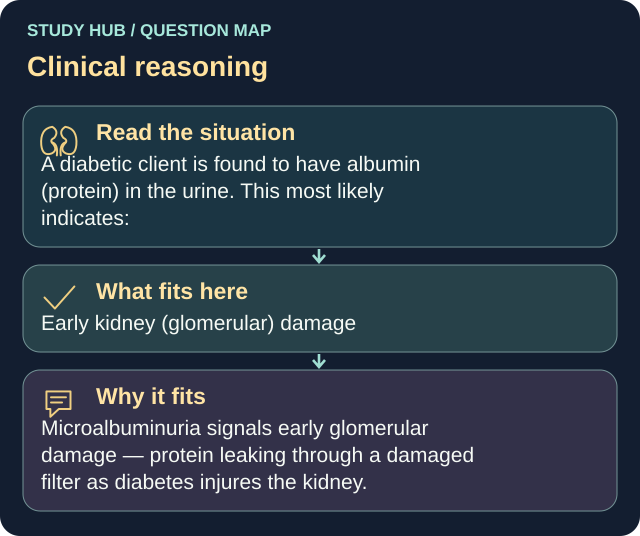

A diabetic client is found to have albumin (protein) in the urine. This most likely indicates:
Answer
Early kidney (glomerular) damage
Reasoning
Microalbuminuria signals early glomerular damage — protein leaking through a damaged filter as diabetes injures the kidney.
Why the other answers do not fit
- A normal finding
- Simple dehydration
- A bladder infection
Shared reasoning for choices without a separate note: Microalbuminuria signals early glomerular damage — protein leaking through a damaged filter as diabetes injures the kidney.
